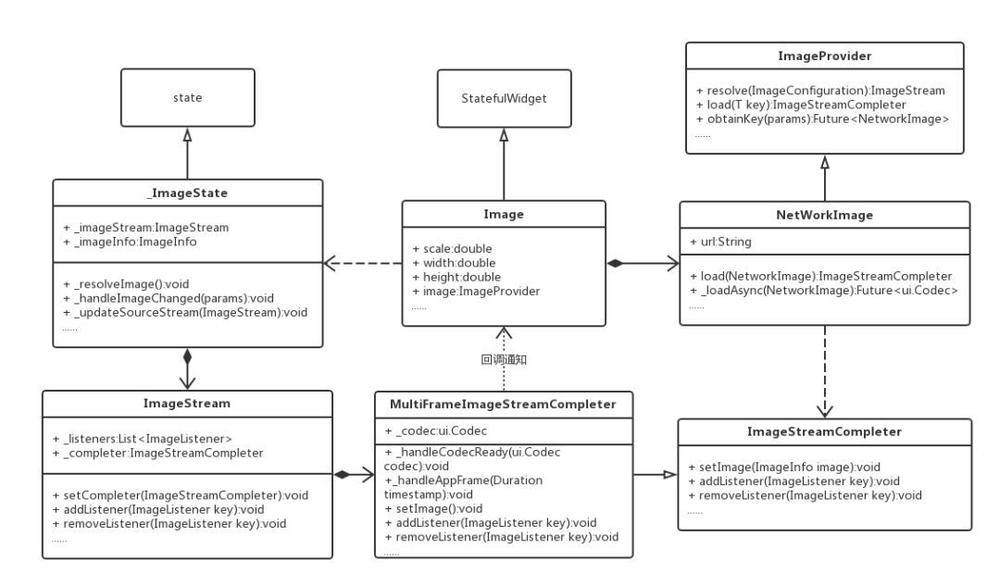

Flutter 加载图片¶
ImageCache¶
用于缓存图像的类。实现最近最少使用的缓存，最多1000个图像，最多100个图像MB。最大尺寸可以使用[_kDefaultSize]调整[_kDefaultSizeBytes]。正在使用的图像（即application通过[imagestream]对象保存引用，[imagestreamcompleter]对象，[imageinfo]对象，或原始[dart:ui.image]objects）可能从缓存中收回（因此需要从如果在[putifabsent]方法中引用了网络，但是只要应用程序在使用位，位就一直保存在内存中。[putifabsent]方法是缓存API的主要入口点。它返回给定键以前缓存的[ImageStreamCompleter]，如果available；如果不可用，则首先调用给定的回调来获取它。在任一case，键移到“最近使用的”位置。 通常这个类不是直接使用的。[ImageProvider]类及其子类自动处理图像的缓存。此缓存的共享实例由[PrimutBut绑定]保留，并且可以通过[painting]库中的[imagecache]顶级属性获取。
默认大小¶
const int _kDefaultSize = 1000;
const int _kDefaultSizeBytes = 100 << 20; // 100 MiB
Flutter 继承关系¶

可以看到Image的框架结构还是有点儿复杂的，在你只调用一行代码的情况下，其实Flutter为你做了很多工作。
初步梳理下每个类概念：
StatefulWidget就是有状态的Widget，是展示在页面上的元素。 Image继承于StatefulWidget，是来显示和加载图片。 State控制着StatefulWidget状态改变的生命周期，当Widget被创建、Widget配置信息改变或者Widget被销毁等等，State的一系列方法会被调用。 _ImageState继承于State，处理State生命周期变化以及生成Widget。 ImageProvider提供加载图片的入口，不同的图片资源加载方式不一样，只要重写其load方法即可。同样，缓存图片的key值也有其生成。 NetWorkImage负责下载网络图片的，将下载完成的图片转化成ui.Codec对象交给ImageStreamCompleter去处理解析。 ImageStreamCompleter就是逐帧解析图片的。 ImageStream是处理Image Resource的，ImageState通过ImageStream与ImageStreamCompleter建立联系。ImageStream里也存储着图片加载完毕的监听回调。 MultiFrameImageStreamCompleter就是多帧图片解析器。
源码分析¶
源码分析
我们看下Image.network都做了什么：
class Image extends StatefulWidget { Image.network(String src, { Key key, double scale = 1.0, this.width, this.height, this.color, this.colorBlendMode, this.fit, this.alignment = Alignment.center, this.repeat = ImageRepeat.noRepeat, this.centerSlice, this.matchTextDirection = false, this.gaplessPlayback = false, Map<String, String> headers, }) : image = new NetworkImage(src, scale: scale, headers: headers), assert(alignment != null), assert(repeat != null), assert(matchTextDirection != null), super(key: key); ......
Image是一个StatefulWidget对象，所以我们看它的State对象：
class _ImageState extends State<Image> { ImageStream _imageStream; ImageInfo _imageInfo; bool _isListeningToStream = false; } class ImageStream extends Diagnosticable { ImageStreamCompleter get completer => _completer; ImageStreamCompleter _completer; List<ImageListener> _listeners; /// Assigns a particular [ImageStreamCompleter] to this [ImageStream]. void setCompleter(ImageStreamCompleter value) { assert(_completer == null); _completer = value; print("setCompleter:::"+(_listeners==null).toString()); if (_listeners != null) { final List<ImageListener> initialListeners = _listeners; _listeners = null; initialListeners.forEach(_completer.addListener); } } /// Adds a listener callback that is called whenever a new concrete [ImageInfo] void addListener(ImageListener listener) { if (_completer != null) return _completer.addListener(listener); _listeners ??= <ImageListener>[]; _listeners.add(listener); } /// Stop listening for new concrete [ImageInfo] objects. void removeListener(ImageListener listener) { if (_completer != null) return _completer.removeListener(listener); assert(_listeners != null); _listeners.remove(listener); } }
我们对_ImageState的两个属性对象解释一下：
ImageStream¶
ImageStream是处理Image Resource的，ImageStream里存储着图片加载完毕的监听回调，ImageStreamCompleter也是其成员，这样ImageStream将图片的解析流程交给了ImageStreamCompleter去处理。 ImageInfo包含了Image的数据源信息：width和height以及ui.Image。 将ImageInfo里的ui.Image设置给RawImage就可以展示了。RawImage就是我们真正渲染的对象，是显示ui.Image的一个控件，接下来我们会看到。 我们知道State的生命周期，首先State的initState执行，然后didChangeDependencies会执行，我们看到ImageState里没有重写父类的initState，那我们看其didChangeDependencies()：
@override void didChangeDependencies() { _resolveImage(); if (TickerMode.of(context)) _listenToStream(); else _stopListeningToStream(); super.didChangeDependencies(); }
_resolveImage方法解析¶
我们看到首先调用了resolveImage()，我们看下resolveImage方法：
void _resolveImage() { final ImageStream newStream = widget.image.resolve(createLocalImageConfiguration( context, size: widget.width != null && widget.height != null ? new Size(widget.width, widget.height) : null )); assert(newStream != null); _updateSourceStream(newStream); }
ImageStream resolve(ImageConfiguration configuration) { assert(configuration != null); final ImageStream stream = new ImageStream(); T obtainedKey; obtainKey(configuration).then<void>((T key) { obtainedKey = key; stream.setCompleter(PaintingBinding.instance.imageCache.putIfAbsent(key, () => load(key))); }).catchError( (dynamic exception, StackTrace stack) async { FlutterError.reportError(new FlutterErrorDetails( exception: exception, stack: stack, library: 'services library', context: 'while resolving an image', silent: true, // could be a network error or whatnot informationCollector: (StringBuffer information) { information.writeln('Image provider: $this'); information.writeln('Image configuration: $configuration'); if (obtainedKey != null) information.writeln('Image key: $obtainedKey'); } )); return null; } ); return stream; }
void setCompleter(ImageStreamCompleter value) { assert(_completer == null); _completer = value; if (_listeners != null) { final List<ImageListener> initialListeners = _listeners; _listeners = null; initialListeners.forEach(_completer.addListener); } }
ImageStreamCompleter putIfAbsent(Object key, ImageStreamCompleter loader()) { assert(key != null); assert(loader != null); ImageStreamCompleter result = _pendingImages[key]; // Nothing needs to be done because the image hasn't loaded yet. if (result != null) return result; // Remove the provider from the list so that we can move it to the // recently used position below. final _CachedImage image = _cache.remove(key); if (image != null) { _cache[key] = image; return image.completer; } result = loader(); void listener(ImageInfo info, bool syncCall) { // Images that fail to load don't contribute to cache size. final int imageSize = info.image == null ? 0 : info.image.height * info.image.width * 4; final _CachedImage image = new _CachedImage(result, imageSize); _currentSizeBytes += imageSize; _pendingImages.remove(key); _cache[key] = image; result.removeListener(listener); _checkCacheSize(); } if (maximumSize > 0 && maximumSizeBytes > 0) { _pendingImages[key] = result; result.addListener(listener); } return result; }
也就是说ImageProvider已经实现了内存缓存：默认缓存图片的最大个数是1000，默认缓存图片的最大空间是10MiB。 第一次加载图片肯定是没有缓存的，所以我们看下loader方法，我们看到ImageProvider是空方法，我们去看NetWorkImage，按照我们的预期确实在这里：
@override ImageStreamCompleter load(NetworkImage key) { return new MultiFrameImageStreamCompleter( codec: _loadAsync(key), scale: key.scale, informationCollector: (StringBuffer information) { information.writeln('Image provider: $this'); information.write('Image key: $key'); } ); } //网络请求加载图片的方法 Future<ui.Codec> _loadAsync(NetworkImage key) async { assert(key == this); final Uri resolved = Uri.base.resolve(key.url); final HttpClientRequest request = await _httpClient.getUrl(resolved); headers?.forEach((String name, String value) { request.headers.add(name, value); }); final HttpClientResponse response = await request.close(); if (response.statusCode != HttpStatus.ok) throw new Exception('HTTP request failed, statusCode: ${response?.statusCode}, $resolved'); final Uint8List bytes = await consolidateHttpClientResponseBytes(response); if (bytes.lengthInBytes == 0) throw new Exception('NetworkImage is an empty file: $resolved'); return await ui.instantiateImageCodec(bytes); }
参数解析：
_loadAsync()是请求网络加载图片的方法¶
scale是缩放系数 informationCollector是信息收集对象的，提供错误或者其他日志用 MultiFrameImageStreamCompleter是多帧的图片处理加载器，我们知道Flutter的Image支持加载gif，通过MultiFrameImageStreamCompleter可以对gif文件进行解析：
MultiFrameImageStreamCompleter({ @required Future<ui.Codec> codec, @required double scale, InformationCollector informationCollector }) : assert(codec != null), _informationCollector = informationCollector, _scale = scale, _framesEmitted = 0, _timer = null { codec.then<void>(_handleCodecReady, onError: (dynamic error, StackTrace stack) { FlutterError.reportError(new FlutterErrorDetails( exception: error, stack: stack, library: 'services', context: 'resolving an image codec', informationCollector: informationCollector, silent: true, )); }); }
ui.Codec _codec; final double _scale; final InformationCollector _informationCollector; ui.FrameInfo _nextFrame; 我们看到MultiFrameImageStreamCompleter拿到loadAsync返回的codec数据对象,通过handleCodecReady来处理数据，然后会调用_decodeNextFrameAndSchedule方法：
Future<Null> _decodeNextFrameAndSchedule() async { try { _nextFrame = await _codec.getNextFrame(); } catch (exception, stack) { FlutterError.reportError(new FlutterErrorDetails( exception: exception, stack: stack, library: 'services', context: 'resolving an image frame', informationCollector: _informationCollector, silent: true, )); return; } if (_codec.frameCount == 1) { // This is not an animated image, just return it and don't schedule more // frames. _emitFrame(new ImageInfo(image: _nextFrame.image, scale: _scale)); return; } SchedulerBinding.instance.scheduleFrameCallback(_handleAppFrame); }
@protected void setImage(ImageInfo image) { _current = image; if (_listeners.isEmpty) return; final List<ImageListener> localListeners = new List<ImageListener>.from(_listeners); for (ImageListener listener in localListeners) { try { listener(image, false); } catch (exception, stack) { _handleImageError('by an image listener', exception, stack); } } }
对于动图来说就是就是交给SchedulerBinding逐帧的去调用setImage，通知UI刷新，代码就不贴了，有兴趣的可以自行查看下。 至此resolveImage调用流程我们算是讲完了，接下来我们看listenToStream。
_listenToStream方法解析¶
我们继续分析didChangeDependencies方法，这个方法里会判断TickerMode.of(context)的值，这个值默认是true，和AnimationConrol有关，后续可以深入研究。然后调用_listenToStream()。 我们看下这个方法：
void _listenToStream() { if (_isListeningToStream) return; _imageStream.addListener(_handleImageChanged); _isListeningToStream = true; }
void _handleImageChanged(ImageInfo imageInfo, bool synchronousCall) { setState(() { _imageInfo = imageInfo; }); }
Widget build(BuildContext context) { return new RawImage( image: _imageInfo?.image, width: widget.width, height: widget.height, scale: _imageInfo?.scale ?? 1.0, color: widget.color, colorBlendMode: widget.colorBlendMode, fit: widget.fit, alignment: widget.alignment, repeat: widget.repeat, centerSlice: widget.centerSlice, matchTextDirection: widget.matchTextDirection, ); }
总结¶
梳理下流程：
从入口开始，Image是继承于StatefulWidget，它为咱们实现好了State：_ImageState,并且提供了一个已经实例化的NetWorkImage对象，它是继承于ImageProvider对象的。 ImageState创建完之后，ImageState通过调用resolveImage()，resolveImage()又会调用ImageProvider的resolve()方法返回一个ImageStream对象。_ImageState也注册了监听器给ImageStream，当图片下载完毕后会执行回调方法。 然后在ImageProvider的resolve()方法里不仅创建了ImageStream还设置了ImageStream的setComplete方法去设置ImageStreamCompleter，在这里去判断是否有缓存，没有缓存就调用load方法去创建ImageStreamCompleter并且添加监听器为了执行加载完图片之后的缓存工作。ImageStreamCompleter是为了解析已经加载完成的Image的。 NetWorkImage实现了ImageProvider的load方法，是真正下载图片的地方，创建了MultiFrameImageStreamCompleter对象，并且调用_loadAsync去下载图片。当图片下载完成后就调用UI的回调方法，通知UI刷新。
最后¶
至此，对Image.network的源码分析到这里也结束了，你也可以返回去看下Image的结构图了。怎么样，分析完之后是不是对Flutter加载网络图片的流程已经很了解了，也找到了Flutter缓存的突破口，Flutter自身已经提供了内存缓存（虽然不太完美），接下来你就可以添加你的硬盘缓存或者定制你的图片框架了。